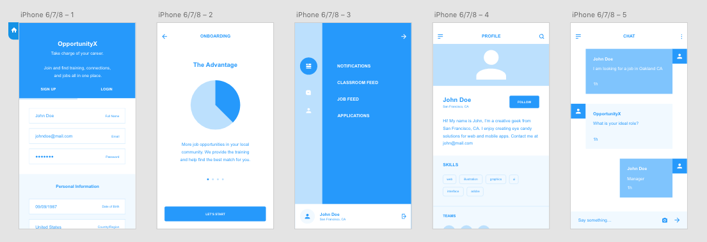

Personal Project
As we look to the 21st century, we are looking towards creating new educational and networking channels for individuals to acquire the skills, knowledge, and expertise to succeed. Many tech jobs do not require an advanced degree. But communities of color and the disadvantaged cannot get hired due to a lack of basic education, mentors and trainers. Existing organizations (i.e., YearUp.org, Eleven Fifty Academy and CodeWalker Institute) are bridging this divide, but could benefit from a more scalable approach. We need to understand the existing approaches (both success and shortcomings), their connections with 21st century firms, and how these approaches do (and can) scale-up.
Whether the business sector is med tech/biotech, internet services, manufacturing, or healthcare, innovative frameworks for 21st century job preparation must be more accessible. These conduits must be understood, and then designed to be both effective and to be shared broadly.
The problem we are trying to address is evaluating the state of open data on a local level and making that information available to the public in an accessible way. Some of our goals are:
For the features, I thought it would be best to start with a profile that gets built out with the help of a bot and even an on call job specialist to chat with the applicants.
I hope to continue this project within Code for Berkeley, the UC Berkeley Code for America Brigade.